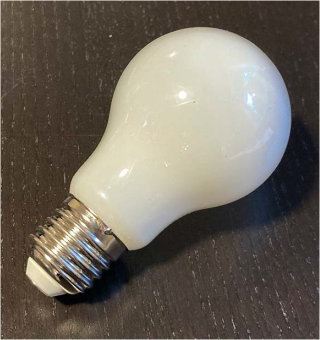
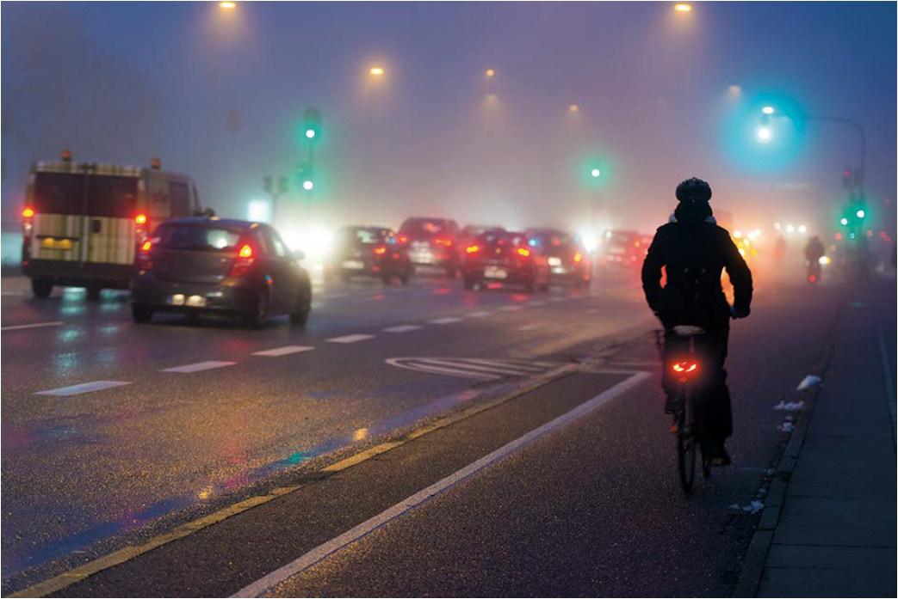
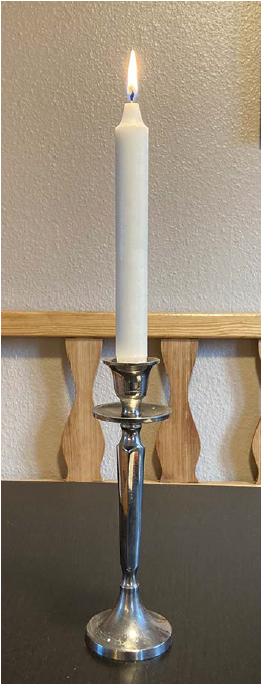

Matematik FP9
Prøven med hjælpemidler
Til dette opgavesæt hører en regnearksfil til opgave 3 og et svarark til opgave 2 og 7
Tirsdag den 3. maj 2022
kl. 10.00-13.00
Kære elev
Prøven består af 7 opgaver. Du har 3 timer til at løse dem.
Ved hver opgave står der, hvor mange point den højst kan give.
Prøven kan i alt højst give 66 point. Du bestemmer selv, hvilken rækkefølge du laver opgaverne i, og hvor lang tid du vil bruge på hver af dem.
Det er vigtigt, at du begrunder dine svar i alle opgaver.
Det betyder, at du i hver opgave skal vise eller forklare, hvordan du er nået frem til dit svar. Du kan fx begrunde dit svar med tekst, beregninger og/eller tegninger.
En del af de point, du kan få i hver opgave, kommer fra dine begrundelser. I de fleste opgaver kan du ikke få det højeste antal point, hvis du ikke begrunder dit svar, selv om dine resultater er rigtige.
I nogle af opgaverne skal du beregne et antal eller en størrelse. I andre opgaver skal du vise, hvordan du finder frem til et bestemt resultat eller afgøre, om en påstand er sand eller falsk.
Der er også opgaver, hvor du skal løse et matematisk problem ved at undersøge. I disse opgaver forventer vi ikke, at du på forhånd kender en metode, du kan bruge til at løse problemet. Ordet ’undersøg’ signalerer, at du selv skal finde på en god måde at løse problemet på ved at bruge matematik, du kender.
God arbejdslyst.
Styrelsen for Undervisning og Kvalitet
Prøven består af 7 opgaver. Du har 3 timer til at løse dem.
Ved hver opgave står der, hvor mange point den højst kan give.
Prøven kan i alt højst give 66 point. Du bestemmer selv, hvilken rækkefølge du laver opgaverne i, og hvor lang tid du vil bruge på hver af dem.
Det er vigtigt, at du begrunder dine svar i alle opgaver.
Det betyder, at du i hver opgave skal vise eller forklare, hvordan du er nået frem til dit svar. Du kan fx begrunde dit svar med tekst, beregninger og/eller tegninger.
En del af de point, du kan få i hver opgave, kommer fra dine begrundelser. I de fleste opgaver kan du ikke få det højeste antal point, hvis du ikke begrunder dit svar, selv om dine resultater er rigtige.
I nogle af opgaverne skal du beregne et antal eller en størrelse. I andre opgaver skal du vise, hvordan du finder frem til et bestemt resultat eller afgøre, om en påstand er sand eller falsk.
Der er også opgaver, hvor du skal løse et matematisk problem ved at undersøge. I disse opgaver forventer vi ikke, at du på forhånd kender en metode, du kan bruge til at løse problemet. Ordet ’undersøg’ signalerer, at du selv skal finde på en god måde at løse problemet på ved at bruge matematik, du kender.
God arbejdslyst.
Styrelsen for Undervisning og Kvalitet
1
Køb af en elpære
Opgave 1 giver højst 11 point|
Anna vil købe en ny elpære. Hun kan enten købe en LED-pære eller en halogenpære. Tabellen viser oplysninger om de to slags elpærer. |

|
|||||||||||||
|
||||||||||||||
| 1.1 |
Hvor stor er prisforskellen på en LED-pære og en halogenpære?
|
|||||||||||||
| 1.2 |
Cirka hvor mange år kan en LED-pære holde, hvis Anna bruger den 3 timer om dagen?
|
|||||||||||||
| 1.3 |
Hvor mange procent er udgiften til el mindre for en LED-pære end for en halogenpære?
Anna køber en LED-pære, selv om prisen er højere end for en halogenpære. Hun påstår, at pengene vil være tjent hjem i løbet af få måneder. |
|||||||||||||
| 1.4 |
Undersøg, om Anna har ret. Du kan fx begrunde dit svar med grafer, som du tegner i et koordinatsystem.
|
|||||||||||||
Foto: Opgavekommissionen i matematik
2
Lys på cyklen
Opgave 2 giver højst 7 point|
9. A har lavet en undersøgelse om elevers og forældres brug af lys på deres cykler. Derfor har de talt, hvor mange cyklister der kørte med lys, og hvor mange der kørte uden lys en morgen på en vej ved deres skole. |

|
|||||||||||||||||||||
| Tabellen viser 9. A’s resultater: | ||||||||||||||||||||||
|
||||||||||||||||||||||
| 9. A skriver om undersøgelsen: | ||||||||||||||||||||||
|
||||||||||||||||||||||
| 2.1 |
Der er nogle matematiske fejl i 9. A’s tekst om undersøgelsen. Det er din opgave at rette fejlene ved at ændre på nogle af tallene i teksten. Brug evt. svararket.
|
|||||||||||||||||||||
Foto: Colourbox
3
Levetid for elpærer
Opgave 3 giver højst 11 point|
Et forbrugermagasin har testet levetiden for 100 elpærer fra virksomheden SKIN. Diagrammet viser pærernes levetid.
|
||
|
|
||
| 3.1 |
Hvor mange af pærerne fra SKIN havde en levetid på mellem 13.000 og 14.000 timer?
Anna påstår, at flere end 3 4 af pærerne fra SKIN havde en levetid på mindst 14.000 timer.
|
|
| 3.2 |
Har Anna ret i sin påstand?
Forbrugermagasinet har også testet levetiden for 100 pærer fra firmaet BLID. Regnearket BLID_MAJ_2022 viser data for elpærer fra BLID. |
|
| 3.3 |
Hvad var levetiden i gennemsnit for elpærerne fra BLID?
Anna siger, at hun ud fra testresultaterne vil vælge SKIN-pærer, men Peter siger, at han vil vælge BLID-pærer. |
|
| 3.4 |
Du skal bruge diagrammet øverst og data fra regnearket til at skrive et argument for Annas valg og et argument for Peters valg.
|
|
4
Højdemåling
Opgave 4 giver højst 9 point|
Anna og Peter vil finde ud af, hvor højt byens kirketårn er. En dag, hvor solen skinner, måler de derfor længden af kirketårnets skygge og længden af Annas skygge. På tegningen kan man se deres målinger ved de to retvinklede trekanter.
|
||
|
Tegning: Hans Ole Herbst
Anna er 1,69 m høj.
|
||
| 4.1 |
Du skal vise med beregning, at Annas skygge er ca. 1,5 gange så lang som Anna.¨
De to vinkler, der er markeret med sort, er lige store. |
|
| 4.2 |
Forklar, hvorfor de to blå trekanter på tegningen er ligedannede.
Anna har beregnet, at kirketårnet er ca. 11,8 m højt. |
|
| 4.3 |
Du skal vise, hvordan Anna kan have beregnet kirketårnets højde.
Peter har målt vinkel v til 34° og afstanden til kirketårnet til 17,5 m. Han vil bruge målingerne til at regne ud, om det kan passe, at højden af kirketårnet er ca. 11,8 m. |
|
| 4.4 |
Hvordan kan Peter bruge enten sinus, cosinus eller tangens til at beregne højden af kirketårnet?
|
|
5
Stearinlys
Opgave 5 giver højst 11 point|
Anna har tændt et stearinlys og målt længden af det hvert 20. minut. Tabellen viser Annas resultater.
|
||||||||||||||
| 5.1 |
Hvor langt vil stearinlyset være efter 120 minutter?
|
|||||||||||||
| 5.2 |
Tegn en graf, som viser sammenhængen mellem tiden og stearinlysets længde i al den tid, lyset brænder.
Peter har lavet målinger på et andet stearinlys. Funktionsforskriften i den gule boks beskriver en sammenhæng, Peter har fundet i disse målinger. |

|
||
| 5.3 |
Forklar, hvad tallene 25 og 2,4 fortæller om Peters stearinlys.
|
|
| 5.4 |
Hvor mange timer kan Peters stearinlys cirka brænde, før det er brændt helt ned?
|
|
Foto: Opgavekommissionen i matematik
6
Vinkler ved en cirkel
Opgave 6 giver højst 11 point|
Anna har tegnet en cirkel med en diameter og to linjestykker: |
||||||||
|
||||||||
| 6.1 |
Tegn en cirkel med en diameter og to linjestykker på samme måde som Anna, men hvor P er placeret et andet sted på cirkelperiferien.
På tegningen herunder har Anna givet vinklerne ved linjestykkerne navne. |
|||||||
| 6.2 |
Forklar, hvordan Anna kan vide, at vinklerne v, w og t tilsammen er 180°, det vil sige, at v + w + t = 180°
|
|||||||
| 6.3 |
Forklar, hvordan Anna kan vide, at vinkel v og vinkel w er lige store, det vil sige, at v = w.
Anna vil bevise, at vinkel u altid er dobbelt så stor som vinkel v, det vil sige, at u = 2v. Hun skriver de tre linjer herunder.
Anna har skrevet en forklaring på, hvorfor udtrykket i linje 1) er korrekt. |
|||||||
| 6.4 |
Forklar, hvorfor udtrykkene i linje 2) og 3) er korrekte.
|
|||||||
7
Regneudtryk med fire 1-taller
Opgave 7 giver højst 6 point|
I denne opgave skal du indsætte regnetegn og eventuelt parenteser, så regneudtrykkene bliver korrekte.
1 1 1 1 = 3
I regneudtrykket ovenfor kan man for eksempel indsætte regnetegn og parenteser sådan her:
(1 + 1) · 1 + 1 = 3
|
|
| 7.1 |
Du skal indsætte ét regnetegn i hver firkant og eventuelt parenteser, så de 6 regneudtryk herunder bliver korrekte. Brug eventuelt svararket.
1 1 1 1 = 2
1 1 1 1 = 1
1 1 1 1 = 0
1 1 1 1 = -1
1 1 1 1 =
1 2
1 1 1 1 = -
1 2
|